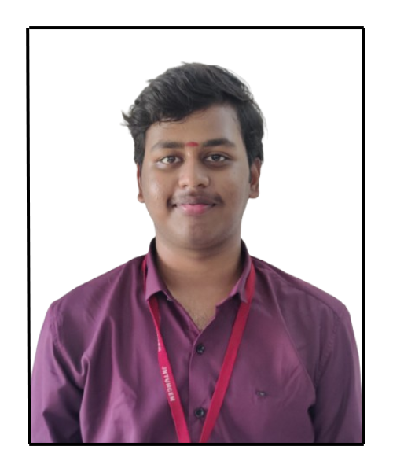

Get to know me better

I am a final-year CSE (AI & ML) undergraduate at JNTU College of Engineering, Hyderabad. My focus: designing and delivering robust backend services, scalable APIs, and automation tools with clean code in Java, C++, and Python.
My technical strengths include data structures & algorithms, operating systems, DBMS, distributed systems, and real-world engineering of scalable systems. I’m known for an agile, end-to-end "get it done" approach—from requirements to production and iteration.
Skills: Java, C++, Python, REST APIs, FastAPI, Flask, Django, MySQL, MongoDB, OOP, Git/GitHub, CI/CD, Docker, PyTorch, TensorFlow, HTML, CSS, JavaScript
B.Tech GPA
ML Internships
Major Certifications
Industry Projects
JNTU College of Engineering, Hyderabad
2022–2026 | GPA: 8.58/10.0
Narayana Junior College, Nallakunta, Hyderabad
2020–2022 | Percentage: 95.2%
Explore my comprehensive tech stack with categorized skills and direct links to documentation.
View Technical Skills